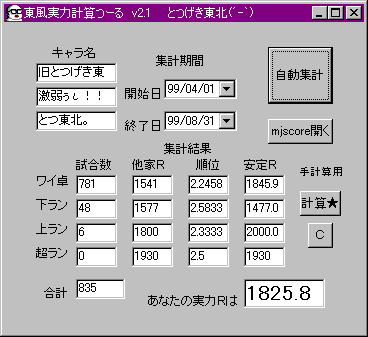
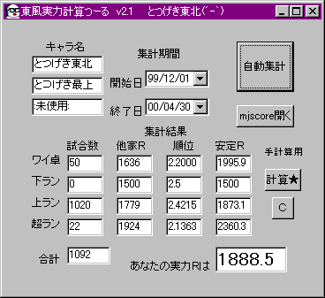
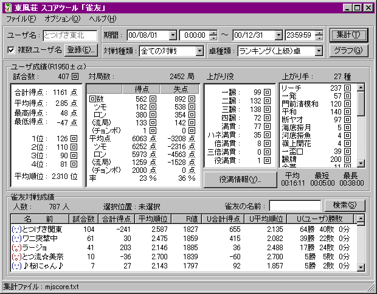

・過去の成績
今は昔・・・とつがまだ竹取の翁だったころ（違）

東風来たばっかりの頃から半年くらいのデータ。
ほとんどワイ卓で打ってました。

上ランメインになった頃。わずかに実力アップしてる感じ。
この当時は上ランのレベルが今よりだいぶ高かった。
この後、２０００年７月の終わりまで暗黒期に入り、また最上にも慣れてなかったので、
安定Ｒ１８７０くらいで最上へ上がったり上ランに落ちたりを繰り返す(笑)。
８月１日より打ち方をがらっと変えて最上に対応。現在1000試合で安定Ｒ2000突破( ´ｰ`)
（東風戦上ラン）

２０００年８月以降の上ラン成績ですわ。
（東風戦ワイ卓）

最近２００戦のワイ卓成績〜。振り込み率１１．６％はともかく、でかいの振ってるなぁ（-｡-；）
あと、チョンボ失点があるのは気のせいです。ま、まさかそんな・・・（；ﾟﾛﾟ）ﾋｨｨｨｨ
（東風戦ラン卓）

最近６０戦のラン卓成績〜。やけに調子がよかったかな・・・実力はもっと下っす(笑)。
１２．５％も振り込んでる・・・あと２位が一番多いのが、ちょっとねぇ(笑)。
とは言え、やっぱラン卓の方が集中して打てるみたい(笑)。

こちらはタコメータによる集計。
他ＨＮの分がないですが・・・（新キャラで打ったりしてるので、最低Ｒは１５００になってます）
チョンボのことえらい言われとるで(爆)。
焼き鳥率２５％！！ 「なにもできない」状態でも平均順位を守ることが大切です。
（東南戦ワイ卓）

少ないけど東南戦も。やっぱ東南戦になると偶然性が減るから、強い人はばんばん勝てるね(笑)。
Ｒ2170だ〜〜(笑)。